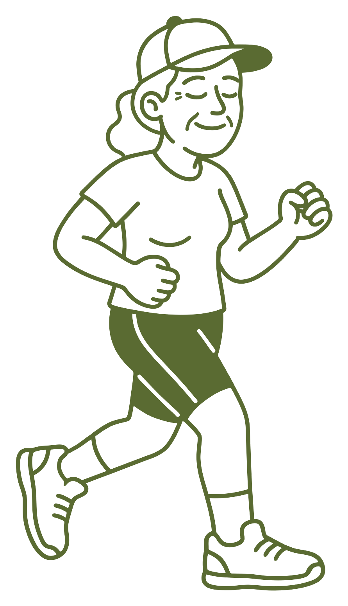

Empezar desde cero
Caminar también es entrenar.

Lo que recomienda la OMS
150–300
minutos a la semana
de actividad moderada. Caminar a buen paso cuenta.
Para empezar
3 días, 30 minutos.
Caminando, con un día de descanso entre medias.
Cuando te veas bien
Luego, alterna.
Y sube poco a poco, semana a semana.
Test del habla
Si puedes hablar, vas bien.
¿Algo de corazón, diabetes o tensión alta? Consulta antes con tu médico.

Tu ritmo es tu ritmo.
Runch
Segueix-nos: @runch.run
Runch
Empezar desde cero
Caminar también es entrenar.
150–300 min3 díasTu ritmo
@runch.run